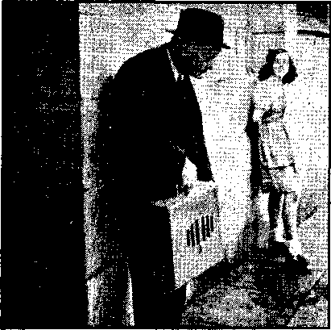

A Post-Mortem for Protestantism 3
Condemned out of Their Own Mouths
The Bible in “Universal” Languages
Indifference of the American Press
Counsel by J. F. Rutherford
Brilliant, Misinformed, Troublesome Man 19
The New Government
A Courageous Witness in Florida
Facsimile pages from Foreign Conspiracy
A gainst the Liberties of the United States 26, 27
British Comment
Bad Record of Catholic Children
Published every other Wednesday by WATCHTOWER BIBLE AND TRACT SOCIETY, INC.
117 Adams St., Brooklyn, N. Y.p U. 8. A.
Editor Clayton J. Woodworth.
Business Manager Nathan H. Knorr
Five Cents a Copy
51 a year in the United States 51.25 to Canada and all other countries
NOTICE TO SUBSCRIBERS
Remittances; For your own safety, remit by postal or express money order. When coin or currHncy is lost In the ordinary mails, there fe no redress. Remittances from countries other than those named below may be made to the Brooklyn office, but only by international postal money order,
Receipt of a new or renewal subscription will be acknowledged only when requested. Notice of Expiration is sept with the journal one month before subscription expires. Please renew promptly to avoid lo$s of copies. Send change of address direct to us rather than to the post office. Your request should reach us al. least two weeks before the date of issue with which it is to take effect. Send your old as well as the new address. Copies will not he forwarded by the post office to your new address unless extra postage is provided by you.
Published also in Afrikaans, Bohemian, Danish, Dutch, Finnish, French, German, Greek, Hungarian, Japanese, Norwegian, Polish, Portuguese, Spanish, Swedish, Ukrainian; also special Australian edition in Kngliah.
OFFICES FOR OTHER COUNTRIES
England 34 Craven Terraco, London. W. 2
Canada ■ 40 Irwin Avenue, Toronto 5, Ontario
Australia 7 Beresford Road, Strathfield, N-S.W, South Africa 623 Boston House, Cape Town
Entered as second-class matter at Brooklyn, N, I(| under the Act of March 3, 1879,
Must Try God Now
♦ The New York Times, issue of June 17, 1940, had the funniest headline ever written, Trying to help boost religion it said of a sermon by the “Reverend" Doctor Norman Vincent Peale, Marble Collegiate Church, Fifth avenue and Twentyninth street, New York city, that “Dr. Peale says human leadership has failed and world must now seek Divine guidance". In other words, having raised every possible kind of hell for 6,000 years, and being now in a jam up to its ears, it is willing, as a desperate alternative, to—er—let the Creator see what He can do in a pinch. If lie isn’t as successful as the New Deal, why, Roosevelt can have a fourth term, might be the idea.
None Believe the Bible
♦ The Pentecostal Evangel says that of the 7,000 ordained ministers in New Rngland only 1,000 believe in an authoritative, infallible Bible. This is just to say that there are not 1,000 nor is there even 1 and the Evangel itself does not believe. When to all these the plain proof is cited that the dead are dead; that they know nothing at all when in death; that Jesus was thus dead and thus in the Bible hell; that the dead are in their graves and that the only hope for any is in a reawakening of the dead, they all with one accord Begin to get red and yell for the police. They can’t take the truth: it is too true and too plain.
Why the Alarm Clock?
♦ Somebody sent in a clipping wherein a minister wanted to know why some of the unsold used cars, good-looking ones, could not be turned over to the worn-out preachers so that they could go out and serve the unchurched communities. And then, skillfully, the one who sent in the clipping drew an alarm clock at the top, and it awakens memories of the long ago. The man needs a clock, not a car.
“And in His name shall the nations hope.”—Matthew 12:21, A.R.V.
Volume XXII Brooklyn, Y.r Wednesday, July 23, 1941 Number 370
A Post-Mortem for Protestantism
CENTURIES ago courageous and sincere men separated themselves from the Roman Catholic Church in vigorous protest against the abominations committed therein. Others joined with them in their protest, and despite cruel and relentless persecution by the Hierarchy’s inquisiti oners, the movement grew. Thus started what is now known as Protestantism and is a matter of history. Though its adherents are in every part of the earth and numbered by the millions, less protest is heard from these millions now than was raised by its handful of founders 400 years ago. Why? Certainly the evil against which the original protest wras made has not been remedied. On the contrary, the “Mother of Harlots” is more active than at any other time in its history. Having crushed continental Europe and established its “new order” there, it is now spreading out to encompass the entire earth and subjugate the world. And yet, at this crucial time, Protestantism is silent. Not only is it silent, but it hinders others who would protest, saying we must be “good neighbors”, presumably even if that neighbor were the Devil himself.
Why the change of sides just as the battle reaches the climax? Protestantism no longer exists. It is dead. It has not been killed in action, but has collapsed internally. What are the conditions within the organization which caused its death?
Protestantism has deserted man’s true guide, the Bible, and set up its own teachers, resulting in confusion. This is large-
JULY 23, 1»41 ly responsible for its deterioration. People desiring instruction in the Scriptures find none, and turn elsewhere. Here are two samples: The Albertan (Calgary) reports the “Reverend” E. Melville Aitken as stating, in substance, “Armageddon had nothing to do with this day and age. It was a predicted battle in the days of Israel which had not taken place and would not occur.” Jehovah said, “The prophets prophesy lies in my name . . . I sent them not, yet they say, Sword and famine shall not be in this land; By sword and famine shall those prophets be consumed.”—Jeremiah 14:14,15.
The second is from the Dutch Reformed Church, South Africa. A committee was appointed to draw up a brochure setting forth the church’s view on the second coming of Christ. After working one year the committee produced a pamphlet which said no thousand-year reign was to be expected I So the Lord’s Kingdom, for which He taught His followers to pray, is out so far as the Dutch Reformed Church is concerned. Is it any wonder Protestantism is on the skids? It holds out no hope for the distressed peoples of earth who are mourning. .
Condemned out of Their Own Mouths
Let’s examine the testimony of some of their own 'witnesses concerning this internal disintegration. Dr, Charles C. Morrison, in a work entitled “What Is Christianity?” declares of Protestantism that it “stands limp and frustrate before its own civilization to w'hose cry for salvation it has no answer”.
Lucky Baldwin, otherwise known as “Reverend” Christopher J. Balfe, says, “Hell is so full of religious people that their feet are sticking out of the window’s.” “Lucky" has been chaplain of the Cook County Jail and Bridewell Prison, Chicago, for 31 years, and should know. Eighty-five percent of prison inmates come from organized churches. But why does he not also disclose the fact that Catholicism furnishes by far the larger part of this criminal Quota, although numerically constituting but one-sixth of this country’s population? ,
The Wesleyan Methodist contains an article by the “Reverend” Ural T. TTollen-back, Eairmount, Indiana, in which he laments, “Spiritual death reigns supreme in many religious morgues.”
Bishop Karl E. Block, of the Episcopal diocese of California, speaks on finances, a subject dear to the hearts of the clergy. He said:
The church of Christ is a pitiful spectacle when it must be supported by dances and card parties; . . . when, because of the indulgence of officers of the State, we engage in raffles and other forms of gambling to sustain the one agency primarily commissioned to usher in the Kingdom of God.
The “pitiful spectacle” here described is not the church of Christ, but religion; and w’hen Jehovah God fully ushers in ITis Kingdom such gambling dens of religious thieves will be ushered out, nor can they shift the blame to indulgent State officers. While they have not developed the gambling racket to the extent the Catholic Hierarchy has, they tag along behind the “old lady” the best they can.
The most damaging testimony is that offered by “Reverend” Paul Piper, in the Commentator:
Most of us ministers over forty might admit in our most honest moments that we are hypocrites and whited sepulchres, full of dead men’s bones. We are ignorant, lazy and stupid, often liars, thieves, fakers, figurative murderers, moral cowards, narrow’-minded bigots.
But the public seems to take us seriously!
One thing seems quite clear to me. Either the scribes and Pharisees, the preachers of the synagogue whom Jesus railed against in His seven woes, were hypocrites, most monstrous, easily identified, known and shunned by all decent folk—or they were such smooth and suave creatures that people mistook them for genuine. If the former, we may be glad their ilk is diminishing. If the latter—well, excuse me while I wipe the cold sweat from my brow I
Their honest moments should be more frequent. It is seldom the clergy so aptly apply Bible prophecy. However, the striking thing is not so much the burden of the confession itself; for people who observe and think for themselves have long been aware of these facts. But rather it is the calloused coolness wfith which the confession is made. Evidence will be later submitted • showing the trend of Protestantism to Catholicism. Can it be they are already so imbued wuth Cath'olic doctrine that they believe that after “confessional” they have absolution and are delivered to d'o all these abominations? The religionists fail to appreciate the full import of Jesus’ scathing denunciation of the scribes and Pharisees; that applying it to themselves as their colleague has done is in effect signing their own death warrant.
That Protestant sectarianism is today merely a barnacle on the ship of state and about ready to be scraped off as a useless weight and impediment is forcefully stated by Dr. A. C. Volkmann, who, according to the New York Times, asks the pertinent question: “The State has had to take over the major portion of the welfare problems of the peoples, and now if it is to be asked to take over their religious problems also, what function does the church serve?”
Thus out of the mouths of two and many more of their own witnesses they are condemned. The admissions themselves are of little worth, since they are not accompanied by expressions of sor-
CONSOLATION
row and repentance, much less any remedying action. The Protestant clergy are very tolerant—tolerant of the filthy conditions within their organization and the blasphemies against which their founders protested even unto death. Their only protest now, in unison with the Hierarchy, is against Jehovah’s witnesses.
If by these confessions they are trying to beat someone else to the punch, it’s too late. For years Jehovah’s witnesses have been calling, attention to the facts' showing the religious leaders of today as the counterpart of the scribes and Pharisees of Jesus’ day. Such witnesses have suffered much- opposition and persecution for so doing. Now many of the clergy admit the truth of this testimony, but they continue to how-1 against the witnesses of Jehovah in undiminished fury. If the religious leaders wmre sincere they would take vigorous steps to remedy the degeneracy of their organization or get out. Instead of this, hownver, the cry still goes out for “more religion” (there are hundreds of varieties ; they haven’t specified the brand, yet). Never can they plead ignorance; for they acknowledge the state of affairs, and are apparently satisfied.
ITovrever, many of their flock are not so indifferent. Business is not so good. One example will suffice to establish the point. Dr. Nathaniel Forsyth, chairman of the International Council of Religious Education, made the statement that in what was formerly the Methodist Episcopal Church the enrollments in the Sunday school had decreased 1,000,000 in the last twenty years and that in many districts the Sunday schools are threatened with extinction.
Here’s what that million and many more are going to miss, according to a report of the First Presbyterian church, Germantown, Philadelphia, Pa. Among the departments of the church in wdiose activities its members may participate are finance, home week, ushers, sexton, benevolence offerings, afternoon tea, needlework guild, Girl Scouts . . . and
JULY 23, 1941 the list drones monotonously on with some fifty-odd trifles. Each of these departments has its subdivisions, one as many as fourteen. This set-up is typical of the insipid program offered the people by Protestant religious groups. Surely there’s enough variety in this religious hash to satisfy the taste of any man-— every taste but spiritual. They dabble in everything but the weightier matter of doing the Lord’s will. (Matthew 23:23) There’s no time left for that. It’s little wonder business is poor and those ’who attend incapable. As one “'Reverend” complained, “out of 700 in one church, the prayer meeting averaged eight,” and that “out of live hundred in another, five could lead in prayer, but two had to be notified the day before”.
TTarc’s one of the many proposals to stem the exodus. Believing that in union there is strength, “Reverend” Paul V. Gallowmy, Methodist and graduate of Yale Divinity School, urges in fine dictatorial spirit the following: That a Council of Religion be formed, of one ritualism ; that all Protestant churches be compelled to unite therein ; and that the state subsidize the church and support it! They want the public schools to teach their religion for them. Now they ask the State to keep them. What purpose, if any, do they serve-—besides their own belly? Perhaps “Reverend” Gallowmy would accept the job of Protestant Inquisitor General to do the compelling necessary in uniting the 200-odd Protestant sects of this country. It would mean the ash can for the Constitution of the United States, but that would doubtless be agreeable wfith him, too.
The Catholics might be included in this arrangement. They favor ritualism, union of church and state, and governmental doles to their church. As for the Constitution, their representatives have already threatened to blot it out!
The Return Trip
As Rome boasts compatibility with pagan religions and the ability to incor-
5 porate such pagan doctrines and ritual as a part of her own, so she is now absorbing Protestantism. Lacking the courage and strength of purpose of the early Protestants, those of today fall easy prey to the crafty cunning of Rome. Some go completely over to Romanism. Two cases in point: A Buffalo Methodist advertises a midnight mass (curtains for Wesley!). In Pennsylvania the hounds were blessed before tearing a fox to bits to entertain religionists, and this was done, not by a Catholic, but a Presbyterian minister. Appropriately his name is Capers, and the excuse for this one was that such things used to be done in the Middle Ages I
Instead of resisting this trend, Protestantism’s leaders urge collaboration with the Vatican. Note the following examples:
“Reverend” Edgar Warren, in the Exeter (N.H.) News-Letter, states: “Catholics and Protestants are coming more closely together. ‘Rev.’ Raymond Calkins, at the first meeting of the preaching conference sponsored by the Boston University School of Theology, advocated and commended an influx of Catholic theology into Protestant preaching.”
In an address at Rochester, New York, Bishop Charles Flint, head of the Eastern States area of the Methodist Church in the United States, urged “diffused religion” as the only effective source of co-operation, good-will and good faith, and of “fidelity to contracts so ably set forth in the pope’s recent encyclical”. The “fidelity to contracts” does not refer to the contract they claim to have with God. Fearing the double-cross so common among thieves, reference is doubtless made to the concordats and secret agreements for dividing of the spoils among the gangsters now overrunning the earth. The Protestant leaders are looking out for themselves and desire a place in the pope’s “new order”. Little do they realize that co-operation with the Vatican means eventual subservience to
6
Rome. In their simplicity they have overlooked the “death for heretics” policy of the Roman Catholic Hierarchy! Apparently there is a “fifth column” sell-out in the Protestant organization. The traitors would call it “an honorable peace”.
While Roman Catholicism has been put on an equal footing with the heathen and idolatrous religion of Japan in that country, the denial of foreign support to mission establishments comes as a great blow to Protestantism there. This was to be expected. Japan is in the Axis with Catholic Hitler, the pope’s champion, with the result that the pope’s religion flourishes—-the Protestants’ suffers.
The “Protesting” Nation
Just as the Protestant clergy have ceased protesting, so have the nation and its leaders. The men who settled this country fled religious tyranny in Europe in search of a place where they might worship God as they saw’ fit. The fundamental law of the land was framed that this freedom might be guaranteed and left as a heritage for their children. They were Protestants, and established this nation as such. '
Now the president sends an envoy to the Vatican; bills are introduced into the legislatures of the nation to protect the Hierarchy from exposure and protest; the public press treats that religious “whore” as a sacred cow and shields it and misrepresents those ■who would expose it as an implacable foe to the nation’s welfare; and the un-American Legionnaires mob Jehovah’s witnesses because they uncover her ^wickedness.
In response to an invitation issued September 8 by the chief exponent of 'good neighborism’, President Roosevelt, the Catholics, Protestants and Jews gathered together to pray for peace. It so happened that this date wms what Catholics call the birthday of 'Virgin Mary, the Mother of God’. This “coincidence” will help along the infiltration of Catholic theology now being slyly slipped over on Protestants. The Jews
consolation don’t accept Christ, contrary to Catholics and Protestants. The Protestants believe, according to their creeds, that the Church of Rome is the ‘Mother of Harlots’ ; which leaves out the Catholics. Catholics claim there is no salvation outside the “Church”; which puts everyone else in hell. How is it they can all pray together so harmoniously? There are two reasons: They pray to their common father, the god of this world, the Devil. It’s good politics.
War
Another one of the inconsistencies of the clergy which cause them to lose the respect of the people is their position on wars. For instance, during 1914 they were solidly against war; in 1917 they blessed it; and after the war they went back to their position of 1914. Now the trend is back to the 1917 philosophy. They are as unstable and changeable as the popular whim or fancy of the moment, and are subject to it. The flock leads and the shepherds clumsily follow the best they can. The Protestant ministers are not so adept in executing these mental flip-flops as the pope, who has developed such tactics to a fine art. Here are the sentiments of some of the vanguard in the rapidly growing rush-to-war blessing:
The Anglican archbishop of Melbourne, Australia, now says, “I believe we should humbly accept His call to save the world.” They did in 1914-1918, and it’s the worse for the saving. Christ Jesus is supposed to be the Savior, but apparently the archbishop thinks the job too big for Him.
Bishop Ernest M. Stires, Protestant Episcopal diocese of Long Island, said:
Why should they [the 1940 candidates for the presidency] hesitate? Some of us were in France in : 1918 and are quite ready to go again if we are needed. As we meet here, planning for the extension of the Kingdom of God, His world is reeling under the most infamous attack ever made.
JULY 23, 1841
He further places full blame upon Catholic Hitler, but not one word against his chief backer at the Vatican. The only wqrld that is reeling and he is attempting to extend is this “present evil world”.
The slide is gradual at first, but gains momentum. The statements issued by the leaders of the Y.M.C.A., the Methodist Church, the Protestant Episcopal Church, along with others, put them on the band wagon. They say, in part: “The churches in the United States are under obligation to lead their nation to assume a responsible relationship to the present conflicts. Christians in neutral countries capnot evade the ethical issues involved and the consequent claim upon their sympathy and support. It is mistaken to suggest that Christians have no alternative between total abstention from war on the one hand and the proclamation of a ‘holy war’ on the other.”
The only holy war now in progress is that waged by Jehovah’s witnesses against entrenched religious lies, but the clergy are “conscientious objectors” to that fight.
Exceptions
Up to this point the discussion has been general, depicting the deplorable condition of Protestantism as an organization. The statements of its representative^ have been quoted to show that it is extinct. However, in all fairness, attention should be called to some individuals who do protest.
At an address in Ravenna, Ohio, “Reverend” Howard Callahan, pastor of the First Methodist church of Akron, drew thunderous applause from his audience when he denounced the “downright rotten policy of forcing members of Jehovah’s witnesses’ faith to salute the American flag”, and observed that “such measures are in direct opposition to'the patriotic attitude we try to instill in every American”.
At Kinston, N. C., the pastor of the First Baptist church urged tolerance and civil liberties for Jehovah’s witnesses,
7
and expressed his wholehearted admiration for the zeal of those witnesses and their willingness to endure persecution, which, he said, was “a severe rebuke and a challenge to the conventional church”. He realizes the sorry state of religion and that it suffers by comparison. ■
The Bocky Mountain Churchman, Denver, truthfully said that “the Jehovah witnesses that we know are American-born, sober, simple, sincere, industrious people—of that class known as the common people”. Such were those who heard Jesus gladly.
A letter ’written by a Protestant and published in Cavalcade (England), really hits the troublemaker squarely on the jaw: _
The pope did not dissuade his bishops from aiding Abyssinian murder. He declared the victory of the butcher Franco to be a “Catholic victory”. He did not excommunicate Cardinal Innitzer, who used his power over Austrian Catholics to induce them by Pastoral letter to vote for Hitler—Antichrist. The pastoral ended, “Heil, Hitler.” He did not disagree with Father Tiso, S.J., in Slovakia, in espousing the cause of [this] Antichrist.
The letter further mentions the course of action followed by “Father” Voroschen of Hungary, of Catholic King Leopold pf Belgium, and of the Catholic traitors of France and North Albania.
Some are beginning to wake up to the truth of the warning sounded by Judge Rutherford several years ago concerning the conspiracy between the dictators and the Vatican.
Conclusion
The foregoing is just a meager portion of the abundant evidence that Protestantism is dead. It has not been presented with intent to ridicule, but in the public interest. From these facts herein cited, the following clearly appears: That Protestantism’s foundation is sand, having substituted religious tradition, ritual, social functions and philosophy of men for the Word of God; that its leaders and members realize its plight, and disintegration is progressing rapidly. From it the people of good-will are going, the protest having gone. Hence there’s no further justification for its existence, and indeed it doesn’t exist except in name, which is a mockery. Its supporters don’t have what it takes to finish the fight. They have capitulated to the Church of Rome. They are quitters ! The system has not kept faith with the Lord or its early founders, but both are forgotten, and it is now making the return journey back to its “mother church”, doubtless to remain there until both are destroyed by Jehovah of Hosts at Armageddon, along with their father the Devil'and his demons! It has returned to its wallowing in the mire from which it rose centuries ago.
Is there a source of comfort and hope for the honest people, regardless of religious affiliations? The solution voiced most frequently by the ruling element is the “more religion” theory. Religion has been tried, countless varieties, for thousands of years. It has failed. The nations of “Christendom”, with their so-called “Christian religion”, surpass all others in wickedness and oppression. Religion is not the cure. There’s no use trying to patch up the old garment.
The Theocracy is the only place of safety and comfort, and the contrast between it and the nations of this world is sharply drawn. Separation of the people is under way and all wall be in one camp or the other—the Devil’s kingdoms of this w’orld or Jehovah’s Theocratic Government. We are now at the crossroads and each one must choose for himself. Make your choice!
Never Heard of God’s Kingdom
♦ As if they had never heard of Jehovah’s Kingdom, for ’which Jesus taught / His followers to pray, that in it God’s will would be done on earth as in heaven, 300 Protestant church leaders in Philadelphia made an appeal to American churches to support an international system of' world government.
The “Authorized Version”
The common language of the “civilized” part of the world in the days of our Lord on earth was Greek. Therefore the writers of that portion of the Bible written after the death and resurrection'of Jesus, i.e., the apostles, made use of the Greek language, although that was not their “native tongue”. For the same reason the English language, as that Vhich is most widely known throughout the world, is most used for the announcing and publication of the Kingdom mes' sage. It is an interesting fact that the Bible which has attained the widest circulation of all translations, and also greater than in the original language in which it was written before printing was discovered, of course, is the English Authorized Version.
The press recently announced the new edition of the Greek Dictionary of Liddell and Scott, tying in therewith some striking reflections. Among other things the observation appeared: “The first poets, historians, philosophers, orators, mathematicians and physicists were Greeks; and the first fountains of Christianity appear in Greek documents. Greek has continued to exist in spite of the military conquerors of the bloody age.”
The “Vulgate”
The other language which at that time occupied in the “civilized” world a predominant position next to Greek was Latin, the language of the Romans. The Roman Catholic Hierarchy continues until the present to attach a sort of mystical sanctity to this language. It is the official language of Vatican City. The highest authority for their translations of the Bible is not the Greek and Hebrew manuscripts of the earliest ages, but a Latin translation known as the Vulgate, and which also includes the Apocryphal books as a part of the Bible, although these Apocryphal books did not eonsti-
JULY 23, 1941 tute a part of the Bible which Jesus used in Palestine when He was on earth. The collection of Bible books stored in the synagogue at Nazareth when Jesus, according to Luke 4:16-32, read out of the book of Isaiah, included all the books of the Bible from Genesis to Malachi; but not one of the Apocryphal books. Jerome, the translator of the Vulgate, knew this and maintained, and rightly so, that the Apocryphal books do not constitute a part of God’s Word. But, in spite of this, the Hierarchy have inserted these books in their Bible among the genuine books of the Bible as if they did constitute a part of God’s Word.
The fact that the Bible used by Jesus did not contain the Apocryphal books, although these already existed, is decisive for any reverent and true follower of the Master. But not for the arrogant head of the Hierarchy.
Liddell and Scott’s Dictionary
- To mention again the revised edition of Liddell and Scott’s Greek Dictionary: The appearance of this work at a time when the nations are involved in the second world war, the second great travail of the present evil world (Galatians 1:4) just before it is finally cleared from the earth by Christ Jesus, furnishes much food for thought. The extension of this war to a violent battle between Greece and Italy involuntarily carries the mind back to the time when the old Romans, the rulers of ancient Italy, subdued ancient Greece and in turn yielded to the refined civilization of the Greeks. One of the Roman poets of the days before our Lord acknowledged this fact with the words, “Conquered Greece has conquered her uncivilized conqueror.”
The refined civilization of the Greeks cannot, however, give lasting peace of mind and heart. An Afrikaans educator who is an authority on the old Grecian civilization, a professor of Greek in the University of Pretoria, said, in 1938:
9
“Our souls are athirst, and therefore we make so much of the symbolical migration of the oxcart.”
Another thought which connects the admirers of the old Greek civilization with the appearance of the revised edition of Liddell and Scott’s Dictionary is that the “continuity of Greek in spite of many reverses and periods of obscurity in forgetfulness, is an encouraging sign”. One of the prominent cabinet ministers of the present Union government is also a noted authority of this Greek civilization. He speaks currently, together with others, of the “new order” that will be established after the war that is now raging. In this connection he recently gave an unexpected and absolutely unwarranted application to the words of Jesus, “Seek ye first the kingdom of God, and his righteousness; and all these things shall be added unto you,” by saying, “If there is one thing that must be emphasized today it is that the most important change the world needs is not political, constitutional or economic change, but moral and spiritual change. If we seek this, all the other things shall be added unto us.”
The "Old" and the "New” Order
These men do not realize that the present evil world, of which the ancient Greek Civilization constituted and still constitutes a leading part, has since 1914 been in process of disappearing from the scene. They7 do not realize that the Overlord of the new, true and everlasting civilization of Jehovah’s Theocratic Government is JehovjJi himself, and that His great Field Marshal, Christ Jesus, how stands ready for the final destruction of the present “civilization” in the great battle of Armageddon now at the door. There are still many honest persons who do not realize the significance of the great complications originating in 1914. Among the men that occupy positions of authority as rulers there are, however, also persons who do not hate the coming civilizatiqn of God’s righteousness, which can be brought in only by The Theocracy, in contrast to their manmade “new order”, with such bitterness as does the pope and his mates Hitler, Mussolini, Stalin and others. Therefore they interpose no obstacles of government woes in the path of the proclamation thereof. Because Britain and the Union of South Africa thus far 'are counted among the -countries that have not yet fallen into that darkness of barbarity, the Theocratic message is still made known with power Jo the people in these countries as well as in other countries. When the pope and his totalitarian .comrades shall have extended their power over the nations in such measure that they' everywhere shall make an end of His proclamation, that shall be the sign that the battle of Armageddon will soon begin. (1 Thessalonians 5:1-3) In that battle the Lord will finally make an end of all that has been built up in the earth since the days of the Flood, and will deliver those who center their hope solely on The Theocratic Government; and to them and their children will He give the earth to live upon in everlasting peace and joy and without death. The ancient Greek civilization, together with all other civilizations of the present evil world, will then be for ever a thing of the past, and shall not even be brought to mind. —Isaiah 65 :17.
Ravens Bring Food to Elijah
Nevertheless, such publications as Liddell and Scott are not useless works. The various translations of the Bible used by Jehovah’s witnesses for closer knowledge of the contents of God’s Word are in most instances translated by men who were and are supporters of this present evil world and not of The Theocratic Government, and who were and are not even witnesses of Jehovah. Jehovah used ravens, an unclean kind of bird, to bring food to Elijah by the brook Cherith. (1 Kings 17:4-6; Leviticus 11:15) So today Jehovah provides that along with the special Bible helps
prepared by His own organization men who have studied particular occupations come forward as translators of the Bible, compilers of (Bible) dictionaries, concordances, etc., even though they have not been sanctified by consecration to Jehovah God through Christ Jesus. Tn this sense we welcome also the publication of the revised edition of Liddell and Scott. But as a sign of the survival of the ancient Greek language and civilization as a foundation for Hie coming world-order we cannot accept it. The foundation of the “new world” is the Son of God, Christ Jesus, and that in harmony with the prophecies of old which Jehovah gave to TIis witnesses of the past to record for the profit of and as guide for His witnesses of today.—-Afrikaans Consolation.
A New Catholic Bible
♦ A revision of the Catholic New Testament has made its appearance and is being given something more than the usual scant attention paid to the Bible by Catholics. A great number of copies yre in the hands of the Catholic reading public and Catholics will now have an opportunity to see for themselves the remarkable fact that this Bible does not, any more than the Protestant Bible, have anything to say about “purgatory”, “papal supremacy”, “confession to priests,” “indulgences,” and the numerous practices that are so common in the Boman Catholic sect. An interesting change in this revision is made in the passage where Mary tells Jesus there is no more wine (at the wedding in Cana). He asks her, “What wilt thou have me do?” This rendering is the direct opposite of the original, in which Jesus advises her not to seek to influence Him. Another point of interest is where, at 1 John 5: 7, it is admitted that many oldest manuscripts do not mention “the Father, the Word, and the holy [spirit]” or state that these three are one. The book is printed in a style similar to that of the well-known Weymouth JULY 23, 1B41
translation, and is modernized in expression to a considerable extent.
Indifference of the American Press
♦ The indifference of the American press at the sufferings unjustly inflicted on Jehovah’s witnesses attracts the attention of the editors of The Quill, University of Missouri. It notes, “A free press merely smiles when freedom is denied Jehovah’s witnesses,” and yet notes the self-evident fact that newspapers, to defend freedom of the press, must necessarily fight to preserve the civil liberties of the witnesses, as well as others. It notes also the indifference of the American citizens, remarking that when the witnesses are driven from a community by mob violence the large body of citizens do not object.
Another example of those who are aware of the sinister prevalence of flagsaluting “patriotism” is Enoch H. Doble, who writes like a genuine old-time American to the Quincy (Mass.) Patriot Ledger, as follows:
Last summer I talked with a young journalist from Vienna who a few months before’had been released from a German concentration camp. He spoke of the perfected cruelties of the Nazis and the many suicides amongst the prisoners as a result. But one group of people, he said, had stood out as an example of courage to them all. This group refused to salute Hitler, and nothing that the Nazi torturers could do could make them. They were called “Jehovah’s witnesses”, he said.
Two extremely intolerant letters to this column lately have attacked this same group here in Quincy, and. it leads one to wonder if we do not have our own Nazis in-the-making right here at home. To my knowledge the single law that any of these people has ever broken is that about saluting the flag; and that, causing no real harm to anyone, is in fact only following the very principle for which the earliest founders of this state and nation crossed the Atlantic and braved savages, sickness and starvation in the American wilderness—namely, the freedom to worship God as they saw fit.
11 -
Got His Degree in Four Months
♦ Four months after the earl of Athlone, governor-general of Canada, banned the teaching of the Bible by Jehovah’s witnesses, and complied with the request of the Roman Catholic Hierarchy to have the organization declared illegal, he was given an honorary degree at the Catholic University of Laval, Quebec. On that occasion he gave an address praising religion. How very appropriate!
It is a good illustration of hour the politicians and religionists work together against The Theocracy. The same thing occurred in Ohio when Bricker was up for re-election. He did the Hierarchy’s will against Jehovah’s witnesses. The Devil loves and cares for his own. He, Bricker and the Hierarchy are of one mind.
Elbert Hubbard on Religion
♦ Savonarola martyred, Spinoza hunted, tracked and cursed, and an order issued that no man should speak to him nor supply him food or shelter, Bruno burned, Galileo imprisoned, Huss, Wycliffe, Latimer and Tyndale used for kindling—all this in the name of religion, institutional religion, the one thing that has caused more misery, heartache, bloodshed, war, than all other causes combined.—Elbert Hubbard, writer of the famous “Message to Garcia”.
Winant’s Catholic Connections
♦ The new ambassador to Great Britain, John G. Winant, is not a Catholic, like Kennedy, hut is an Episcopalian, like Roosevelt, with Catholic connections. Just before he left for his post, his daughter, who had previously been wed to Carlos Valando, of Peru, in a civil
12
ceremony, was married to him all over again by a priest in the rectory of St. John’s Catholic Church, Concord, N. H.,
Advertising the Book “Religion”
♦ Cardinal Hinsley broadcast to the United States and made the cheering statement that in Britain and in all other civilized countries there must be a return to religion. That’s right, Arthur. Wait a little and you will see plenty of copies. The cardinal wants all British soldiers to wear crosses. The reason is apparent. Unable to catch them with either salt or sugar, he wants the name of it, anyway.
Dressed* in a New Scarf
♦ Dressed in a new religious scarf (what is the name of those blamed things?) Cardinal Hinsley blessed 100,000 crosses “for soldier crusaders”. He had to make two jobs of it. The first 50,000 went to those who had already ordered them. The balance will go to those who can be persuaded that the wearing of this silly bakelite will make any difference whatever in any place where it matters.
“In Accordance with Our Principles”
♦ With profound truth and unreserved sincerity did Veuillot, the champion of Roman Catholicism, say to the liberals of France: “When you are the masters we claim perfect liberty for ourselves, in accordance with your principles. When we are the masters, in accordance with our principles, we refuse it to you.”— Tke Roman Catholic Church in the Modern State. Marshall.
The Things That Are Caesar’s
♦ The education of Americans is in the hands of the people themselves and is put into effect by the public-school system, in which all American children are educated and 2,500,000 Catholic children besides. It has been well stated that in this matter of public-school education “no regard is due to the opinions of a close corporation under the control of a foreign potentate”;
- CONSOLATION
Villeneuve and Mussolini
♦ ' It was not long after Cardinal Villeneuve put Catholics in his archbishopric on bread and water fasts for peace until the pope was urging every Catholic in every country at war to give up his life in combat against his fellow Catholics, and thus to show his patriotism. Meantime Mussolini’s bishops were telling him to wipe the new Palestine off the map.
Persecutions in Southern Rhodesia
♦ At Shabani mine twenty of Jehovah’s witnesses, some of whom had served the mining company faithfully for over ten years and the majority of whom have wives and families, were dismissed simply because they refused to remain silent but insisted on their right to publish the good news of the Kingdom in their own time.—Yearbook of Jehovah's witnesses.
Food Rations for Vatican City
♦ The Associated Press reports exceedingly generous food rations for Vatican City. Each citizen may consume a pound of coffee a month, and 41 pounds of sugar and 22 gallons of gasoline in the same time; a quarter of a pound of butter a week and 31 ounces of meat and two small loaves of bread daily.
Birth Rates in Switzerland
♦ Switzerland is rapidly losing its Protestant predominance by the simple excess of Roman Catholic births. The London Catholic Herald asserts that there are 185 children born annually to every 1,000 Catholics, while there are but 130 to every 1,000 Protestants, and only 75 to every 1,000 Jews.
Says the Dictionary
♦ Says the dictionary, Merriam-Web-stePs New International, Second Edition, 1934, “Whore. 2. a. A community or a religious group accused of idolatry or idolatrous practicescommonly applied (more fully whore of Babylon) to the Roman Catholic Church or its head in the 16th and 17th centuries.” (Page 2922) JULY 23, 1941
Education in Quebec
♦ In the province of Quebec, Canada, education is entirely in the hands of the Roman Catholic clergy. Some of the natural results are that 75 percent of the children leave school before they are twelve years of age; the percentage of illiterates is more than double what it is in Ontario; the number of public libraries is only one-twentieth the number in Ontario, and the circulation of books is in the same proportion.
Taught and Craving Idolatry
♦" Taught and craving idolatry, citizens of Amecameca, Mexico, several years ago made a “religious image, ‘Christ of the cornstalks,’ which is made of stiff stalks of corn.” So says Pennsylvania Grit for * March 16; 1941. The image is honored each Ash Wednesday, says Grit, which recently panned Jehovah’s witnesses.
What Did They Do?
♦ The Roman Catholic Register has a headline and a couple of inches to the effect that a Roman Catholic bishop, a priest and a nun were exposed to public view in an iron cage for six hours before being expelled from Siam; but it didn’t say what they did to get the advertising, so it rather spoils the story.
The Art of the Spawner
♦ French Canadians take obediently to the urgings of the priests that they should have as many children as possible ; and they are getting results. In 1916 there were 2,881,361 Catholics in Canada; now there are 4,662,970. It is claimed that of every 100 French-speaking inhabitants, 97 to 98 are Catholics.
The Priests and the Quintuplets
♦ The Dionne quintuplets received the Papal “blessing” and their first 'communion when they reached the interesting age of 6. It took five priests to do the job. That made it an easy year for the priests, because the Dionnes are now rich beyond the dreams of avarice.
White Dove Was a Gray Pigeon
♦ Newspaper slop writers sent out a report all over the world that a white dove had flown into the Vatican and settled on the pope’s throne (April 12). Now it turns out, after the ravaging of Denmark, Norway, Netherlands, Luxem- ' burg, Belgium and France, and nearly every other country in Europe, that the white dove was merely a gray pigeon, that it did not settle on Mr. Pacelli’s throne, but cowered in a corner of the room, and stayed for only a minute or so, anyway. ■ ’
Protestants Wonder
♦ Protestants wonder at the nerve of Franco the Baby-killer in confiscating and pulping 110,000 Bibles after he had granted a permit for their -entry into Spain, and wonder at the lack of nerve of the New York Times, which mentioned the matter in its early morning edition of October 6, 1940, and deleted it from the second and subsequent editions.
Looks Bad for the Germans
♦ The new Roman Catholic prayer books in Germany contain for the first time special prayers that the Germans may be successful in the world conflict now under way. As such prayers always work in reverse, it looks mighty bad for the Germans,
One More Horrible Blasphemy
♦ “When a man makes up his mind to pray, and when he prays well, prayer equals and surpasses sometimes the power of God. It triumphs over His will, His wrath, even over His justice.”—Our [Australian] Sunday Visitor, February 25, 1940.
Died the Same Day
♦ King Alfonso XII of Spain was very ill with heart trouble in Rome. So he was sent the Cape of Pilar, Madonna of Zaragoza, supposed to have miraculous qualities in facilitating cures. He died the same day. You might know it.
Hitler Needs More Religion
♦ The pope says that “negation of God [the Roman Catholic ‘Church’]” and ir-religion are to blame for the awful jam the world is now in. His argument seems to be that Hitler, his own protege, needs even more religion than he already has. But if he had any more of the same kind of religion that he now has, how could the world endure it?
Prayers for Victory
.♦ At. the prayers for a British victory, held in Montreal on February 9, 1941, there were present nineteen archbishops and bishops, and a special prayer was read both in French and English in all Roman Catholic churches in Quebec.
Hitler Controlling Italy
♦ Hitler now controlling Italy, it will be very easy, when he gets hard up, for him to call on the pope to disgorge, and unless he does so Hitler will take it anyway. So suggests The American Guardian, and previously The Watchtower.
Blessing Heathen Japan
♦ When the Japanese foreign minister called on the pope he was given a 65-minute interview, and at its conclusion the pope gave his “blessing” to heathen Japan. If the Devil were to call on him he would do the same thing.
And So They Were Married'
♦ A dispatch from Berlin (in the Brooklyn Eagle, February 8, 1941) shows that 32 German Catholic chaplains were awarded the first class Iron Cross and 71 chaplains of the same “faith” received the second class Iron Cross.
Business Falling Off
♦ The church business is falling off. The Official Catholic Directory for 1940 admits a net loss of 3,371 persons since 1939. Many more than that number accepted the truth as proclaimed by Jehovah’s witnesses.
(To be continued)
FOR some time the republics of both North America and South America have been looking for a formula to cope with the subversive activity of Nazi agents. This was supplied by a revolutionary ruling by Acting Supreme Justice Julio Cesar de Gregorio of Uruguay when, on February 1, he held eight Nazi leaders in jail without bail on the charge of plotting to overthrow the government.
More important, he ruled that those who plot to overthrow and change the existing form of government at the expense of political independence had no recourse to the constitutional guarantees of freedom of political action. In a significant passage, the acting supreme justice stated:
We are not dealing with delinquents who consider the nation’s Constitution defective and dangerous for the people, and attack it with the intention of changing it but still leaving us with our independence. . . . What they are attacking is the very essence of our existence as an independent nation.
Arnold Fuhrman, leader of the eight men held in jail, planned a bold attempt to seize Uruguay in the name of Germany to be used as a wedge to conquer South America. Heads of storm troopers and propaganda groups, and two members of the Gestapo, were among those seized.
The justice remarked that the plot strongly resembled ones used by the Nazis in the conquest of other nations. He delved into the details of Fuhrman’s plan, and named seven reasons why those arrested were beyond the pale of constitutional law. The reasons included the tie-up between the Nazi party of Uruguay and that of Germany, the maintenance of youth and shock troops, plans for military strategy and propaganda, a plan to divide the country into military districts, and the maintenance of glider organizations.
The pattern is certainly familiar, and JULY 23, 1941
follows the methods used in the smaller European countries. In Europe, the democracies protected the Nazi organizations under their constitutional clauses guaranteeing political freedom. The result'was conquest followed by enslavement. This decision of the acting chief justice of Uruguay indicates that at least one republic of this hemisphere has profited by the mistakes of Europe, and intends to protect itself from Nazi subversive activity.
It is noticeable in the United States that all Nazi, Fascist or Communist groups who have run afoul of the law have screamed for their constitutional rights, despite the fact that they admittedly seek to overthrow the government set up by the Constitution, It is hard to convince the average citizen that there is anything in the Constitution that says it cannot protect itself from attacks from within as well as attacks from without the United States borders.—M. B., in The New Age for March, 1941. .
“Honorary” hut Dishonorable Consuls
♦ “Honorary” consuls of South American countries, domiciled in Austria, Poland, Latvia, Germany, and Sweden, received huge sums (sometimes as much as 6,000 marks) for issuing visas to Jews desperately anxious to get away from Europe to any land where they might live in peace. When the ships bearing these unfortunates arrive at destination, the Jews are not permitted to land, are without funds and are booked for return to Europe with horrors on the way there and after they arrive.
Argentine Gift to Britain
♦ Argentine packers made a gift of 6,000 cattle to Britain and processed the cattle free of charge, and British warships visiting Buenos Aires are provisioned with beef free of charge.
WITH divine authority the apostle wrote: “The love of money is the root of all evil.” Money is a medium for measuring value and carrying on merchandise. The merchant or trader is one who traffics in material things for selfish gain. Money, within the meaning of the Scriptures, is that which is a measure of personal gain or which brings gain to the person. It may be gold and silver or the approval of men, or the gain of influence and power over others.
Love for'money or that which money represents started Satan on his wicked course. Satan began to make merchandise of the human race for his own personal gain, and therefore that was the beginning or root of evil. He foresaw rising from the fountain of perfect man and woman in Eden a sea of human creatures, and he determined to use them for his own personal gain. Hence he commercialized and trafficked in the human race. When mankind had grown in numbers Satan brooded over that symbolic sea of human creatures and brought forth the wicked beastly organization by which he has since ruled the world. In his organization he has made prominent three elements, to wit, commerce, religion and politics; and with this organization, all of which is mercantile, Satan has filled the earth with violence.
All the violence of the earth may be properly laid to commercial religion, for the reason that all world religions have been used for the selfish gain of creatures, and not one of them for the honor of Jehovah’s name. Wherever commerce itself has gone there has been a form of religion accompanying it to furnish a sanctimonious screen behind which Satan, the chief of demons, has operated. Religion is demonism. That so-called “Christian religion”, with its candles,' and other paraphernalia, has adopted pagan demon religion, note the authoritative statement of Cardinal Newman, in his essay on Development, published in London in 1878. Quoting from chapter six: “The use of temples, and these dedicated to particular saints, and ornamented on occasions with branches of trees; incense, lamps, and candles; votive offerings on recovery from illness; holy water; asylums; holydays and seasons, use of calendars, processions, blessings on the fields'; sacerdotal vestments, the tonsure, the ring in marriage, turning to the East, images at a later date, perhaps the ecclesiastical chant, and the Kyrie Eleison, are all of pagan oeigin, and sanctified by their adoption into the [Roman Catholic] Church.” [Page 373] Concerning the commercialism of religion Revelation, chapter 18, verse 23, says the time will soon come when “the light of a candle shall shine no more at all in thee; and the voice of the bridegroom and of the bride shall be heard no more at all in thee: for thy merchants were the great men of the earth; for by thy sorceries were all nations deceived”. This shows religion is a snare.
Professed servants of God who are religious leaders of “Christendom” today depend upon their influence and material wealth to deliver them al the approach-' ing battle of Armageddon, but the prophecy (Zephaniah 1:18) says otherwise: “Neither their silver nor their gold shall be able to deliver them in the day of the Lord’s wrath; but the whole land shall be devoured by the fire of his jealousy; for he shall make even a speedy riddance of all them that dwell in the land.” Those worldly-wise men who have relied upon their own building of so-called “civilization” have laid up on earth treasures by which they hope to protect and save themselves. Thus they have heaped up
their treasure for the days of evil as a kind of insurance against disaster. All the dictators have large amounts of money stored up outside of their respective countries from which they are liable to be chased by the enraged people. Hitler is reported to have large accounts or deposit's in the name of agents in nine foreign countries, but none in Germany nor in the land of his fellow dictator in Italy, whom he does not fully trust. When he is compelled to flee and to seek a place of hiding and refuge he will find that his earthly treasure thus laid up will do no good for him. This is also true with reference to the other dictators and political “big shots”. .
It has been said that the Vatican, the headquarters of the Roman Catholic Hierarchy, has stored up a fabulous amount of earthly treasure. That great treasure of silver, gold and precious jewels has been gathered from the various countries of the earth. Even from the poor peons of Mexico as much as thirty million dollars a year was taken to the Vatican, until that institution was somewhat curbed in Mexico. Added to that treasure the' Hierarchy have their ■intake from the “purgatory” racket, fraudulently operated among the credulous hangers-onl Added to the “purgatory” fees is that collected from the “masses for the dead”; and the holdup collection plate passed by the ushers; the “Pay-as-you-enter" charge for a pew in the church building; also the religious bingo ^ames; gambling games, and the great piles raked in therefrom; also their ill-got gains from raffles of this and that; and money contributed by the state, as in Germany and Italy, which has been wrongfully taken from the people in the form of taxes; also the sums that have been wheedled out of many upon their deathbed, and large sums of money collected out of the insurance policies paid by insurance companies to the widow upon her husband's death, or some other dead relative; also the profits from the numerous commercial deals and invest-JU1-Y 'S3, 1941
ments, such as Monte Carlo, Wall Street, liquor manufactories and breweries, and in stocks and bonds, and in grain and other products dealt in upon the stock exchanges; and, added to the foregoing, numerous “charity” drives operated up-■ on the general public, Catholic and Protestant, Jew and Gentile, and responded to by numerous persons because of their fear to go contrary to the influence of the mighty men of the Hierarchy; also great revenue derived from their enslaving “houses of good shepherd”, orphanages and hospitals operated for selfish gain; Peter’s pence to the “poor” pope; also the sale of candles, beads, “holy water,” and many other things too numerous to mention here. But wait till Armageddon begins and “the dictator pigs begin to root” after they have finished exploiting and robbing the Jews.
At the universal war of Armageddon, of Jehovah’s organization against,Satan’s organization, no amount of money or other treasure will “talk” or serve to bribe Jehovah and His great Executive Officer Christ Jesus, the “King of kings and Lord of lords”. No amount of accumulated earthly treasure “shall be able . to deliver them in the day of the Lord’s wrath”. The Almighty God will receive nothing as pay7 to keep that hypocritical religious crowd out of the shambles and to save them from destruction. Deuteronomy 10:17 announces: “For the Lord your God is God of gods, and Lord of lords, a great God, a mighty, and a terrible, which regardeth not persons, nor taketh reward.” Ezekiel 7:19 predicts: “They shall cast their silver in the streets, and their gold . . . shall not be able to deliver them in the day of the wrath of the Lord; they shall not satisfy ■ their souls, neither fill their bowels; because it is the stumblingbloek of their iniquity.” Furthermore says the Lord God: “Treasures of wickedness profit nothing; but righteousness delivereth from death.” (Proverbs 10: 2) God’s organization is the only place of security and safety.
. 17
I
Making War in the Nude
♦ Somehow it doesn’t seem just right for a soldier dressed only in the nude to pick up a general as a prisoner; but it hap-. pened at Bardia, There being nothing exciting on hand, a British colonel was taking a swim when an Italian general, Francisco Argentine, ran by him and hid in a cave. A British sergeant saw it, and armed the colonel, and they persuaded Argentine to come out and henceforth be sure of his meals, which he was glad to do. The British had so much fun at Bardia that they even arrested one of their own cooks, because they mistook him for an Italian. Nobody was mad at Bardia, and everybody had a good time except those that got away.
The March into Libya
♦ bf. course, there was some fighting, when the Australians came inarching through Libya, or rather riding on those good trucks made up there in Canada, but for the most part the Italians seemed' glad to see them. The British fed the Italians well, but the Italians supplied the food. The farther they got into the country, the more storehouses fell into their hands. Sixteen Italian generals threw up their titles and some 114,000 Italian troops surrendered in six weeks of marching and fighting.
As this is written, British and German soldiers are fighting it out, for control of the road into Alexandria and Suez.
Glad to Be Among Friends
♦ The Italians at Bardia seemed glad to be back among friends. The British have always been friendly to the Italians, and so when the British came strolling along down the Libyan coast the Italians greeted them like long-lost brothers. They surrendered in groups of 30 or so to one Australian, and 2,000 of them entrenched in a cave surrendered to a single British officer.
Hitler’s Railroad Across the Sahara
♦ Realizing that the oceans may be closed indefinitely, the French government at Vichy authorized the expenditure of 5,00(1,000,000 francs to connect the vast region of French Equatorial Africa with the harbor of Oran on the Mediterranean. It is a wonder that it was not done two generations ago. The line will be only 1,250 miles long, or only about half the length of the nine lines that cross the American continent from the Mississippi and Red rivers to the Pacific coast. The route across the Sahara presents no difficulties greater than are met with in building lines across what was once called the “Great American Desert”.
The Hefty White Rhinoceros
♦ The white rhinoceros, whose home is in Uganda, Central Africa, tips the scales at four to five tons. He can literally tip the scales, too, or anything else; and if he happens to feel out of sorts you had better get out of his way. Turning an automobile upside down would be no. trick at all. For some reason unknowm the white lady rhino pushes her calf in front of her when she goes for a stroll on a Sunday afternoon, while her black sister goes ahead and her calf tags along behind. The census shows that there are about 220 white rhinos in Uganda.
Saved His Whiskers
♦ Famous for his appetite, his energy, his fiery temper, and, most of all, for his bright red whiskers, General Bergonzoli, one of the most capable of the Italian generals, deserted his troops and got away from Bardia the night before it was captured by the British. He was in charge ■when the poorly equipped troops of the Spanish Republic licked the Italians at Guadalajara. His principal asset from now on will be his renowned electric ■whiskers.
Tunisia Is Next to Libya
♦ Tunisia, under French control, lies next to Libya, which was under Italian control until the Germans took it over. The British wondered how so many Germans got over from Italy into Libya. The way Pertinax puts it for the North American Newspaper Alliance is as follows :
Lately the British have been trying hard to ascertain how the German general staff had succeeded in transporting, equipping and keeping fully supplied two or three motorized and armored divisions in Libya. Was it possible for such a huge volume of war material to have frustrated the vigilance of the British Fleet? Little by little the services of military intelligence became eonvineed that some kind of connivance could'be detected between the German staff in Libya and the French authorities in North Africa.
If is all simple enough. Hitler and Petain are fellow religionists, both working for the same boss, Mr. Pacelli. Hitler wanted to send a few thousand “tourists” into Tunisia. Petain is under his control. There was no way to resist, and so in the “tourists” went, as they did into every country now under his control. At the moment, these “tourists” are in Persia by the tens of thousands, and after a little they will be as active in Palestine as they now are in Libya.
Polyglot Army in Ethiopia
♦ The British army fighting Italians in Ethiopia until May 18, when the Italians offered to surrender, came from South Africa, Rhodesia, Kenya, Nigeria, the Gold Coast, the Sudan, and Ethiopia itself- It has Belgians, Indians, Free French troops from French Equatorial Africa, and the British themselves, from Britain, Australia, and points north, south, east and west. These thirteen nationalities, working together, bored into Ethiopia from thirteen different key points, making it entirely impossible for the Italians to put up any adequate defense.
JULY 23, 1941
Brilliant, Misinformed, Troublesome Man ♦ The French in Algiers, finding that the oases in the Sahara were caused by artesian springs, conceived the idea that they could drill a lot of wells and create a lot of oases in the desert. They drilled the wells and found the artesian water, but the result was that some of the older, established, prosperous oases Kent dry and thousands of Aral? families were ruined.
There is a story of a beautiful section of our Northwest, where the settlers found abundant grass, clear streams with many fish and plentiful deer. But there were mountain lions which preyed on the deer, so the settlers set about exterminating the mountain lions. And when they finished that job the deer, deprived of their natural check, increased with such rapidity that they ate off all the grass, the streams were filled by erosion and the fish killed. Finally, the deer either starved to death or moved away.
Which brings us up to our present subject: The Missouri Conservation Commission has appealed to farm boys and others who shoot hawks under the misapprehension that they are enemies of man to cease the practice. Hawks are friends of man-—or more properly friends of red clover. No less a personage than ex-Gov. Lloyd C. Stark is authority for that' statement. It works out this way: Hawks and owls keep down the overabundance of field mice. Field mice destroy bumblebee nests and bumblebees. Bumblebees are the best pollenizers of red clover, and if they are exterminated, the red-clover growers will be seri- ■ ously damaged.—Kansas City Star.
De Gaulle’s 1,650-Mile Foray
♦ General de Gaulle, commander of the “Free French” forces, has the distinction of successfully accomplishing the longest foray in history. His army swept 825 miles across the Sahara desert, annihilated the Italian forces at the oasis of Murzuk, in the heart of Libya, and then returned to its base in Equatorial Africa,
19
Theocratic News from Japan
♦ Christian loving greetings to you. Indeed with cordial gratitude to our heavenly Father, and as a servant of God united with you in Jehovah’s service, I make this report to you. May this report, by the Lord’s grace, drop in your hand safely.
For many years the greedy harlot, the Boman Catholic Hierarchy, had been making her desperate efforts to grasp the control of Japan. Tn her way to unjust triumph there stood a powerful enemy. It was, of course, the body of Jehovah’s witnesses and none other, who, in faithful obedience to the commandment of the Most High, 'were fearlessly and incessantly engaging in the work of exposing her hypocrisy and filthiness to the people and of proclaiming the gospel of The Theocracy. As you knew, the witness work in Japan had been, by the grace of the Lord, making steady increase year by year up to 1939. A large quantity of Japanese Consolation and other literature full of the life-giving message of truth had been being placed in the hands of the people.
Necessarily the harlot, the supreme representative of Satan on earth, was so greatly enraged that she was trying her every means to stop our witness work.
Then a good chance offered. The outbreak of Japan-China war on July 7, 1937, gave her a golden opportunity. Taking the tide as it offered, the Catholictotalitarian gangsters succeeded cleverly in grasping the control of Japan. It is now quite manifest that Japan is entirely in the hand of the Hierarchy. All the powers of government are under her domain and any resistance against this influence is impossible.
Of necessity the war made our work difficult by degrees. As the war developed the pressure became more and more severe on us in everything. It was to be fully expected that the enemies would make an onslaught upon us sooner or later. Needless to say, we had been firmly determined trusting entirely to the care of the Lord for our guidance.
Eventually an event happened. It was in the beginning of 1939 that myself and one of our brethren were called up for the military service. That we refused to do, because of our faith and conscience. Naturally and immediately we were brought before the military court, and were convicted on the charges of “lese majesty” and “disobedience” after being kept for four, months in the house of detention. Then we were put in the Tokyo Military Prison separately and in due season I alone was released.
*
Jehovah's Protection and Blessing
Now I cannot reflect on my past two years’ penitentiary life without offering my cordial gratitude and praises to our heavenly father. There were many regulations in it,which every one of the prisoners there must be obedient to whether willing or not, and at the same time are not necessarily consistent with the instructions of the Bible. In all cases I behaved, not as a prisoner, but as a Christian, every action of whom is to be regulated by the Scriptures and by nothing else whatever. That is to say, and as you will understand, I behaved in accordance with these holy instructions, to wit: “We must obey God rather than men”; “He that is faithful in that which is least is faithful also in much.” Thanks to Jehovah God, who provided me with many opportunities to give fine testimonies before the authorities, and who, at the same time, always giving me spiritual encouragement and protection in the midst of the enemies, enabled me to fight through my fight of faith though it was severe.
I was released in what seemed to be a deliverance little short of marvelous.
CONSOLATION
Publishers of The Theocracy in Recife, Pernambuco, Brazil, At a recent baptism where 7 were immersed 2 are pioneers; and there are 10 other publishers. A year ago there was not an active publisher in Recife. The “great multitude” is appearing and the children are already ‘crying in the temple’.
Little did I dream that I should be released, because there had been no hope whatever for me to be helped, for many military reasons.
Thus I left prison to find that almost all of our brethren had been imprisoned and that a young brother with an invalid sister were looking after the properties of the Society, which had been closed.
Within a few days after we had been sentenced in the military court all of our brethren who had been engaging in their witness work were arrested simultaneously throughout the land, and after a year or so a few were acquitted conditionally, while the majority are yet in prison. Those who are free now are mostly invalid sisters or else young children, and they are placed under some kind of special supervision under threat of being imprisoned again if they do not “behave properly”.
JULY? 23, 1941 ■
As to brethren in prison, T am told that they are well and courageous, though details are not known so far. They are still on trial, and absolute secrecy is preserved as to the actual state of the case, in spite of being arrested and prosecuted on the charges of “lose majesty” and “sedition”, they are not by any means guilty, of course. The enemies of the Kingdom, dominated by demons, not having been able to find in them any guilt that they sought, recently enacted a vicious law by which they are not only able to “lawfully” punish our brethren severely, but even able to never discharge them as long as they remain faithful to Jehovah and his King. It appears to be properly said that now the Lord does not interrupt the enemies to go as far as they want, in order to let them see in His due time His Almighty power and limitless wisdom crushing them completely and thus to vindicate His holy name.
21
This said law, on the other hand, not only restrains those who are free now of their liberty as to giving the testimony in the name of the Lord, but ordains that the proclaiming the message of the Kingdom in any way is to be “illegal” and therefore "criminal”. Both our enemies and many of our friends have the thought that the Kingdom work in Japan is fully stopped. But it is the work of Jehovah, and not of any man. The gospel of the Kingdom must be preached until the great Theocrat and His King would say “It is done!” We want to do, and are doing only by the grace of the Lord, with all our might what our hands find to do, though organized work is impossible any longer.
Three years have passed since we were cut off from the supply of the spiritual food. And now, dear brethren in the Lord, we would ask of you the favor to send us some food for our mind, for we fervently wish to be refreshed and strengthened thereby. Indeed, all of us are so hungry and thirsty, and our friends are with dejected air for the lack of wholesome food for a long time.
I think some personal name will facili-tate.matters, rather than that of “Watchtower office”, which is under the eye of the authorities.
Uma Trinna de publi cad ores da Teocracia. ern Caxias, Estado de Rio de Janeiro, em 1940. (The little boy makes 8 hours in the field on Sundays.)
Baptism in river, Recife, Pernambuco, Brazil
The detailed situation of our friends throughout the land is still unknown because I am under restraint. As soon as
I hear something, I shall let you know.
Wishing that the Lord may give you faithful children of Jehovah ever greater joy, courage and peace, I remain, with cordial greetings, by the grace of the Lord, your fellow servant for The Theocratic Government.
Bible Distribution Increased
♦ Jehovah’s witnesses are the most active placers of Bibles and Bible helps in the country. It is gratifying to them to know that the Census Bureau reports a sharp decline in the output of fiction in 1939, with a rise in publication of Bibles and Testaments from 5,579,317 in 1937 to 7,927,848 in 1939.
A Courageous Witness in Florida
♦ Saturday afternoon two of Jehovah’s witnesses were arrested in my home city, but were turned loose and returned to their positions on the street corner as magazine distributors. At 8: 30 I joined them. My husband works for the police department and is opposed to our work. He suspected 1 was going on the street,
Blind Theocratic publisher using the new phonograph at Seattle Theocratic convention
by reason of a telephone call! had given him before I left home. He hastened down town looking for me, found me, demanded to know what I was doing, and I told him I was exercising my rights as an American citizen, doing what the Supreme Court has decided I have a perfect right to do.
Roughly he took me by the arm, telling me to come on because the chief of police was going to take them all to jail. I told him I did not mind being arrested, but I was on duty at that corner and would stay there until 9:00 unless arrested. He stood there in utter disgust. Soon the chief came up and I asked him if he wanted a Watchtower. The chief was so mad he was white in the face. My husband apologized, and the chief scolded and said I should be ashamed; and then I wanted to know why I.should be ashamed to announce Jehovah’s kingdom.
The chief told my husband to get me off the street; and he tried to do it, but I wouldn’t budge. The time was mine, to worship God as I desired. He begged me not to make a scene; so I went with him to the jail, thinking my companions were there. 1 found no one there; so I went
JULY 23, 1241
back to my corner, offering The Watchtower, Consolation, and Refugees booklets until it was time to go home. I had a good time, and the Lord’s blessing in my heart.—Mrs. Pete Franks,
Persecution in Australia
♦ History has a remarkable habit of repeating itself, and prophecy has a strange tendency to become fact.
In the early* days of Christianity, because in the very nature of things Christianity was what it was, persecution was the rule rather than the exception.
Then later the representatives of Christianity ceased to stand for what Christianity was, and the persecution ceased.
Now prophecy (Matthew7 24:7) is being fulfilled, and because world circumstances demand it there are those who, in a w'orld gone mad, are trying to live and witness to the commands and teaching of Jesus Christ. The result is that throughout the world, on a colossal scale, persecution of faithful Christians is rampant again.
The latest manifestation of this insane persecution is in Australia, a part of the British Empire, where “Jehovah’s witnesses” have been banned, their property confiscated, and their societies dissolved.
Some few' years ago this thing happened in Germany’ (some people talk as if these things happened only in Ger-
Theoeratic publishers, Baton Rouge, La.
23
many), then for some months the persecution of this people has been proceeding in America, because they could not respond to every demand of state, and the cruelty of this persecution is enough to make angels weep. '
And now, for no other reason than the consistent teaching of prophecy, they are accused of preaching subversive doctrines, and banned by the Australian Government.
What is the Christian church going to say about this? There was much said when Hitler was persecuting Jews and Christians alike. An outcry throughout the world. Now religious persecution is being propagated in our own empire; what are we going to do about it?
There will be uncharitable people who will say that “Jehovah’s witnesses” are false prophets, and that their teaching is an error of the last days, and their Society better dissolved. Let me remind any such who may read these words, that is not the point. “Jehovah’s witnesses” are a Christian Society, they love the Bible, they stand for its teachings, and are prepared to suffer for it, too; moreover they are marvelous exponents of prophecy, and it is this prophetic teaching that has got them into trouble. The Christian church generally ignores prophecy; and it may be that, because of that, God raised up this people to preach it. It is not something invented for wartime. They have preached these truths ever since the Society was founded. And now, because of their faithfulness to God’s prophetic Word, they are being persecuted.
If the Christian church in this country, and in Australia, is going to stand by and let this matter pass without protest, let me remind both the Christian church in this country and in Australia that after “Jehovah’s witnesses” it may be their turn next; it certainly will if they make any attempt to be faithful to God.
Apart from an admiration of their energetic zeal, a zeal that puts most Christians to shame, the writer has nothing in common with “Jehovah’s witnesses”, but they are being persecuted for their faith, and he feels that the whole Christian church should raise its voice without delay.
The prophetic outlook as revealed in the Bible is not very complimentary to the 20th century civilization; and so, when prophecy is preached, 20th century civilization revolts, and persecutes those who preach it. But if this persecution continues, God will not regard it with complacency, and it will not help the cause for which the British Empire is fighting.
If the Christian church regards the matter with indifference, God will judge her. When will the Christian church awake and face these hideous facts that are challenging her very7 existence? Unless the church arouses itself out of its lethargy7 it will find itself cast on one side as being of no service either to God or to man.
We have our own idea as to the powers behind the powers that may be responsible for this persecution. No other religious society has given such a revelation of the intrigues of the Hornish church in affairs politic. Judge Rutherford’s exposures of this pernicious system may7 have a lot to do with the persecution. But, then, all true Christians are protestants, and all true protestants protest against evil in every form. “Jehovah’s witnesses” have been faithful in this matter, a matter on which the rest of the so-called “Christian” church has been cowardly. In its attempt to save its skin, the church is in danger of losing its soul.
“Jehovah’s witnesses,” a body7 of Christians and prophetic witnesses, are being persecuted throughout the world, and a part of that persecution is taking place in the British Empire. It may be taking place in this very country sooner than we think. Awake, Christian CHURCH, AND MAKE YOL’R i’KOTEST.—Reprint from The Signpost (London), February7, 1941.
(To be? conHn-ued)
THAT animals’ instinct of danger is keener than humans’ has had many proofs during the present war in England.
A donkey had been some little time in a London shelter for animals, awaiting removal to a place in the country. I was walking along this street one day, when the donkey began to “heehaw” loudly. Someone seized my arm and dragged me quickly down into an air-raid shelter.
“What’s the hurry?” I panted. “I didn’t hear the final warning.”
A bomb exploding horribly near prevented an answer. When the noise subsided somewhat my rescuer nodded wisely, and explained, “That donkey is the best air-raid warning I’ve ever known. Never fails to tells us when danger is near.” And so it proved.
Then there is the old lady who sleeps peacefully in her bedroom, in her London home, yet is always down in her shelter before the bombs come too near. Congratulated on her bravery, she laughed. “I’m not brave. It’s this clever old parrot of mine.” She pointed to a knowing-looking gray bird in a cage near her. “That bird warns me in plenty of time, so I can sleep in peace.”
Then there is “George”. A common alley cat. When his family take to their shelter under the stairs, they listen, and if the patter of paws is heard, running down the stairs, they say, “Here’s George.” And faces are buried in blankets, and hands held over ears, while George takes his place under a chair. Without fail, no sooner is George settled, than a very near crash is always heard. And though the “All clear” may not have sounded, if George leaves the shelter, the family know that they can safely do so.
“Harry Tate” is a ginger cat, belonging to a little girl. It was Harry that came and woke his little mistress when an incendiary bomb had set the house on fire. Aroused, they were able to throw the
JULY 23, 1941 sand, that is always ready in a pail, over it. Probably lives and property were saved by that animal’s instinct.
Dogs, too, have contributed their share in saving life and property in this war.
Mike is an old Irish roof-spotter. He always has “Paddy”, his Irish terrier, with him on this job, for that dog always barks ahead' of the explosion, giving Mike time to reach safety himself, as well as ring the warning to the people in the building he guards.
“Duke” is a Great Dane, who has won a row of pots, medals, and blue ribbons, at peacetime dog shows. One night as he and his master were running to an airraid shelter, he suddenly caught hold of his master’s trouser leg, and pulled him to the ground, where he stood guard over his prostrate body. A moment later a mass of debris fell and buried the shelter and spot where they7 would have been but for that animal’s instinct.
Bravery, too, is a quality7 of animals as well as of humans. A house was bombed, but a mother bird sat bravely protecting her young ones, in their nest under the eaves, and remained there in spite of all the noise and the fact that practically all the wall fell around her.
An A. R. P. warden, after an explosion, saw a cat come out of the debris, carrying a kitten which she laid at his feet, and with a little “meow” she ran off and brought out another. In this way she saved her whole family of five. I can assure you they had the safest and most comfortable home that could be found.
A little girl was grieving in the shelter because her pet mouse was left behind. She had tried to save it, but its cage was empty. What was her surprise when her little cocker spaniel came to her and laid the little damp mouse at her feet. It was quite unhurt. The soft trained mouth of her dog had carried it safely. —E. M. Buchanan, English journalist, in Our Dumb Animals. March, 1941.
25
M Htmca.
together different from our own school system, What is the nature of lb is foreign system ? Is it far enable or adverse to liberty? And are ihese religious or political questions ? Foreign emigrants are Hocking to our shores iu increased numbers, two third* at least are Itoman Catholics, and of the must ignorant classes, and thus pauperism and crime are alarmingly increased- The Irish Catholics in un especial manner clan together, keep themselves distinct from the American fatinlv, exercise the political privileges granted to them by our hospitality, not as Americans, but as Irishmen, keep alive their foreign feelings, their foreign associations, habits, and manners. Is this mixture and these doings favorable or unfavorable to American character, and national independence 7 and is this a re/if totra or a political question 7 It would, be easy to add to this list of questions purely potihccL which arc invoked in the mixed system of Popery ; and are editors who cry out against the Popish controversy so ill-in formed of the character of ihi4 CfitfrcA one/ Stale sect, that they are unable to distinguish the petit far/ from the religious questions ? Has Popery so cloaked itself in sacredness,, has this political engine of foreign despotism'so sanctified ils very name, that our press is awe-struck at its rfmvemenis, and cries sacrilege if its political -claims to our reception be in the slightest degree disputed? Whence come all the sorrows and regrets about controversy, and lamentations and whinings about intolerance, because freemen are jealous of the meddling of foreigners in our concerns ? Is this"discussion of the political principles of Popery really ill-timed and gratuitous ? Who has provoked it? What! shall foreign powers combine together, secretly and openly send their money and their agents, to spread a great political and religious system over the country ; a system notorious for enslaving, im-Kverishtng, and degrading the people; shall they
ild their means of attack within our borders, and American freemen be rebuked into silence, when they venture to examine the character of ibis- foreign
If interested in these facsimile pages of Professor Morse’s book Foreign Conspiracy Against the. Liberties of the United States, you 'will be still more interested in the whole story as it is set out in Consolation No. 568. Does it not seem incredible that one of America’s largest and best-known publishing houses should fear to own its best book!
HttTxCC 2fi
enterprise, and to question the purely benevolent nature of (heir imperial majesties1 love for our souls 7 It is a subject of deep interest indeed, to the community, Io know how far our press is inoculated with this no-confrowFjy spirit; this truly papal spirit; this emphatically anh'-Amerfcan spirit. How is it that our free principles of government have been brought out, arid set before the world, but by free, unembarrassed discussion; by controversy, by sharp Controversy, by the collision of intellect with intellect, It is in the skilful conflict of mind with mind, that truth is elicited ; it js by the friction of keen debate, that the rust of error is kept from gathering over, and corroding away vital truths. Better, far better, occasionally io endure even the excesses of the stonn, so necessary to scatter the noxious vapors of the atmosphere, than Io purchase a fatal repose by dwelling in the Qijiet but pestilential atmosphere ot a tomb. r-n Ljt'tile spirit of liberty otf of despotism, that now! frowns upon free inquiry, that would shut out debate from the secular press, by the deceptive cry of re/T gwra controversy ? Who are they that are dreading and shrinking from examination? Who that caution all those over whom they have power. 4■ against attending upon, or taking pari in, or noticing meetings/1 for the discussion of the political question of Popery ? Ah ! is this the tender point? Is it when the political question is proposed for public debate, that Popish Bishops, first take the alarm, and the spirit* ttal jurisdiction is paraded lurch, and the spiritual power exercised, to prevent their subjects from excr?. citing their po/tlfooJ privilege? the religious quesuoiifthat alone with which Bishops have any thing to do) be freely debated, without their interference. And is il only when the political question is
' Both Bubcp Fenwjck of PArladrtpAi's. am! Bfohop Vmbota of Atoe-YeM. hare ju«t iwoed ordr tn icol /om, to tbuc
under Lhtlr JnriMidum J io retrain from oiicnd-in( on the d>*c waaiooa where P<K»rry m the Mbieciof debate. Thue documents *r« wot* thy of notice. They wIIlJIliiMraia aeteral detpoiie principle* inho* rent to the Tfcphh e/xem: H&» trovM tbeec urdera be read by any Prateiuat wet, m comwn from iheir owd clergy 1
SG niritz.
started, with which at Bithopt they have nothin? to do, that they fulminate their spiritual thunders against those who agitate the subject 1 And is it in such intermeddling with politics, that they are upheld by the Protestant press 7 Is our press indeed in awe of Popish bishops 7 Does it fear to touch the civil character of Popery, for fear of giving offence to Popish bishops 7 Truth has nothing to fear from the severest scrutiny. It is error that loves mystery ; that seeks concealment; that shrouds itself in secrecy, and cries out persecution 1 Yes, persecution, forsooth, if any one attempts to drag it into the light. It was error that the poet aptly describes as
,--nne'in ttsil,
. J Annrri to point, Kiugbt bock "* turn *c«in;
For lif hl she holed *■ U< e denty b*Je, Aye, wont in dewfl etantHeaa to remain, Where plain, none ought her Me, nor *he oee any plain. This is a matter not to be covered up by silence. The political press has a fearful responsibility now resting upon it; it has a sacred duty to the country to perform, from which it cannot, must not shrink. It should be known, that there is a wider desire for knowledge on Popcry, in its multifarious hearings upon society, than some seem to be aware of and especially in its effect upon our civil institutions ; a desire, which, having been created by the necessity of the times, (by /Ac fact of unusual efforts made by foreign governments^ hostile to our institutions, to spread throughout the country, Papery)musl be sat* isjied. . . .....................
I The ywMrea/cAaraefer of Papery is a legitimate subject of discussion in the secular press, and we believe that when the intelligent conductors of our journals shall have justly apprehended that part of the mixed system of Popery which belongs to it as a political ays/em, they will do longer be deterred by the senseless cry of rdigfotw cbnlroueray, from lending their columns and their pens for its fearless discussion. They will see that the religious question of Popery is a separate affair, and with the discrimination that should belong to them in their responsible nxrxcM- 27
situations, will be able to keep the distinct religious and political character of the controversy, each within its respective limits.
The public mind is awake far and wide to the fac(T that Popery is a jtMfi/foalas well as a religious system, nor will freemen be lulled to sleep by the Popish anodyne of no controversy ; they will not rest till these more than suspicious maumuvriugs of Jesuit intriguers ; of Austrian conspirators against their liberties. shall have been searched to the boiicnn.r~J
Facsimiles were made May 22, 1941, containing material quoted on pages 22-25 of No. 568. In No. 561 this magazine featured ''Confessions of a French Catholic Priest”, published in 1837 by D. Van Nostrand, Oddly, the Van Nostrands admit
they published the scientific works of Prof. S. F. B. Morse, who wrote the preface to that book, but they are now shy of admitting they published the "Confessions”. Yet, in so doing, they rendered America a real service.
30 fuei'atoiiy xcharx*.
partyt the writer has consented to collect the num-ben into a pamphlet, adding notes illustrative of many matters which could not so well have been introduced into the columns of a newspaper.
That* vigorous and unexampled effort is making by the despotic governments of Europe to cause Popery to overspread this country, is a fact too palpable to be contradicted. Did not official documents lately published put this fact beyond dispute, yet the writer had personal evidence sufficient to convince him of the fact, and of the political object of the enterprise, while residing in Italy in the years 1830—31, from conversations with nobles and gentlemen of different countries, with the officers of various foreign governments, visiting and resident in the Roman and Austrian states, and with priests and other ecclesiastics of the Roman faith. Sometimes it was hinted to him as a check to loo sanguine anticipations of the triumph of the experiment of out democratic republican government; sometimes it was told him by the former class, in a tone of exultation, that a cause was in operation which would surely overthrow our institutions and gradually bring us under a form of government less obnoxious to the pride, and less dangerous to the existence of the antiquated despotic systems of Europe. In addition to these hints to the writer concern! ng the efforts making by the governments of Europe to carry Popery through all our borders, oflier American traveller* will testify to similar hints made to them. By one, I am permitted to say, that the celebrated naturalist, the late Baron Cuvier, known also as a zealous Protestant, inquired of him with marks of concern, if it were indeed true that Popery had made such progress in the United Slates as to cause the exultation (which, it seems, was no secret,) among the legitimates of Europe. And again, that a distinguisned member of one of the Protestant German embassies bo in Rome also made similar inquiries of him, having •-1 heard much boasting of the progress of Popery in the United States, adding this pertinent remark,—
essriTOxT sen Anss. SI
“ (key will be hammer or nails, sir; they will persecute or be persecuted.'’ These facts tnay be of so much importance in aid of the other proofs of a conspiracy which these numbers unfold, as to show that among the various higher classes of Europe the enterprise of a Popish crusade in this country rs not only a subject of notoriety, but is viewed with great interest, and is considered as having a most Important political bearing.
In the following numbers, the writer has chosen to rest the evidence of conspiracy mainly on official documents published in Vienna, because they have been translated and published,* and are within the reach of a ny c itizen of I he country who chooses more closely to examine them. He has also availed himself of facts in the operations of Popish agents in Ihis country, so far as their workings have been occasionally revealed.
The writer will add in conclusion, that he writes not in the interest of a sect or a party, for the question of Popery is not identified with either political party. He has lived too long in foreign countries to be able to identify himself with the local interests of mere party at home, whether in religion or politics. The great democratic features of his country’s institutions, as contradistinguished from the despotic, monarchical, and aristocratic systems of Europe, were admired by him as they appeared more boldly relieved, viewed from abroad in such striking contrast to all around him; and he is thoroughly persuaded that these democratic institutions, if suffered to have their unobstructed course, unobstructed except by the natural checks of education and religion, actively and universally diffused and sustained, are more favorable to civil liberty and to the final triumph of truth, and consequently to human happi-■ness, than any other civil institutions in the world. . IT he writer entertaining these views, has deemed it|
* la the New-Yert Observer, st the months at Jsauary and Fob-1 wary, ISM.
M m sr at oar auuau.
an imperative duly, at any sacrifice, to warn his countrymen of a subtle enemy to the democracy of the country, and to conjure them, as they value their civil and religious institutions, to watch the Protean shapes of Popery, to suspect and fear it most when it allies itself to our interests in the guise of a friend. Mie trust of all that Popery does, or affects to do, whether as a friend or foe, in any part of the country, is the only feeling that true charity, universal charity, allows us to indulge.
Ntw-Yoxx, January, 1835.
These facsimile pages, together with those in preceding and succeeding issues of Consolation, although not consecutive or complete, give an idea of the effort put forth by the totalitarian abomination, religious and political, to destroy the freedom that exists in the democracies, and, in particular, the freedom enjoyed by Americans for a century and a half. Not all American Catholics are aware that they are being used to destroy their own liberties and those of others in furthering the aims of political Romanism.
Philadelphia’s Most Distinguished Citizen ♦ In 1921 Edward W. Bok founded the Philadelphia Award, by which $10,000 goes each year to the citizen who has done most for the community in the year last past. When the award was made in 1941, absolute secrecy was maintained until the moment of presentation, and then the famous contralto Marian Anderson, the Negro girl that a few years ago was scrubbing porches, was brought on the stage and was given the award. In Washington she was denied the use of Constitution Hall; but she was good enough to suit Eleanor Roosevelt and most other Americans.
Indians the Original Citizens
♦ Fourteen years ago a federal judge in Philadelphia decided, sensibly, that the American Indians w'ere the original citizens of this country and are entirely free to cross the international boundaries without passports or other documents. A deputation of Indians recently called at the courtroom over which he once presided to do honor to his memory.
“Reverend” Rhesus Simian, D.D.
♦ At the Philadelphia Zoological Gardens, while spring house-cleaning was going on, fifteen rhesus monkeys each made two jumps of five feet each and got away from their keepers. One of them made the mistake of his life in still clinging to the doctrine of literal hell-fire or “purgatory" which he had been taught in his youth. He dived down a chimney to prove he was right, and suffocated. All the rest wTere recaptured, .but not before one young lady fainted when one of them jumped on her shoulder, and another-nearly did so when one of the simians smiled in at her window while he was having a good time swinging by his tail from the eaves close by.
If it is not, we suggest that you begin immediately to read every issue of the Watchtower magazine. This 16-page, semimonthly publication contains necessary Bible instruction for every person of good-will. The regular rate is $1.00 a year, or 24 issues.
WATCHTOWER 117 Adam. St. Brooklyn, N.Y.
The enclosed $1.00 [$1.50 in foreign countries] is for a year’s subscription for the Watchtower magazine. Please begin with the next issue.
Name ..............................................................................
Street ............................................................................
City .................................................................................
State ..............................................................................
British Comment
By J. Hennery {London}
Civilian Casualties
• Civilian casualties in air raids on Britain in April were: killed, 6,065; injured and detained in hospital, 6,926. In addition, a number of men, women and children are reported as missing, believed killed. The total of casualties since the beginning of last September to the end of April was 80,403: killed, 34,284; injured, 46,119. These figures do not include persons injured but not detained in hospital. Hospitals have suffered much in the raids, but the Minister of Health recently said he did not want people to think that they were exposed to extra risks in being taken to hospital, and he gave figures to show that the patients were specially cared for,, adding, “This shows that the risk was very much less than might be thought, after reading of the extent of damage to hospitals. The Nazis are telling the world of the wickedness of the British bombers, who, they say, deliberately bomb residential districts. The Nazis, of course, do nothing of the kind. All the same the British published figure of homes made again habitable after the bombing was (about the end of April) 70,000, about 40,000 in London, the others in the country towns and cities, and villages entirely free from any military objectives.
The church buildings have been easy targets, whether by intent or accident cannot be known as yet. The Congregationalists say that 95 of their churches in London, and 127 in the country, have been damaged, most of them severely so, and that 61 have been totally destroyed. The other sections of organized religion report similar heavy loss. The parish priest of St. Augustine’s church, Dar-JULY 13, 1941
lington, Durham county, rather bemoaning the fact that his annual sale of work, from which the cause derived its chief source of income, cannot be held, has set about making a weekly collection from every householder in his parish'. He tells his people that what is given is given to God, “who will not be outdone in generosity”! The example of the wealthiest system in the earth, the Roman Catholic church, which nevertheless has the greatest begging system on earth, and most widely flung, is to them a good one to follow. But the Living God, the Creator of all things, never set anyone begging for Him. Nor does He accept the large offerings, the elaborate and costly ritual of the great “church” systems, of those who take His name only to further religious causes. With sharp words God speaks to those who with much ritual bring Him their ‘sacrifices and burnt offerings’ and think by them to find acceptance with Him, and favors from Him. To such He says, “I will take no bullock out of thy house, nor he goats out of thy folds: for every beast of the forest is mine, and the cattle upon a thousand hills. ... If I were hungry, I would not tell thee: for the world is mine, and the fulness thereof.” To these He says, “Offer unto God thanksgiving; and pay thy vows unto the Most High.” (Psalm 50:8-14) With such a sacrifice God is well pleased: “The sacrifices of God are a broken spirit: a broken and a contrite heart, O God, thou wilt not despise.” (Psalm 51:17) The Lord Jesus never set His apostles to the task of building great edifices wherein the poor and despised disciples should worship ; nor has the Lord changed, and those disciples today, seeking to worship in spirit and truth, have no need of nor use for either ornate buildings or elaborate ritual in their acceptable worship of Jehovah, the God and Father of the Lord Jesus Christ.
Amid the lands where there is much freedom of worship of Almighty God, but which would be priest-ridden if religionists had power, Jehovah has a people x 29 separated to His service, who seek to worship Him in the simplicity started by Jesus and the apostles, who worship in spirit and in truth. Seeking no financial help from those not consecrated to God through Christ, by their own sacrifices they maintain convenient meeting rooms, for worship and study of God’s Word; and in the same spirit of sacrifice they spend their time going through the cities and villages telling the good news of the kingdom of God. But Jehovah’s witnesses receive at the hands of religionists such treatment as is depicted in the Psalm already mentioned (Psalm 50), and where also God’s denunciation of all hypocrisy is plainly stated (verses 17-22).
“The Sword of the Spirit”
• This is the name which the Hierarchy in Britain has taken for one of its many side organizations. Probably the Roman Catholics are using it elsewhere, but that is not disclosed here. The name is ostensibly taken from the Scriptures at Ephesians 6:17, where Paul enjoins the saints, those separated to God through Christ and begotten of the holy spirit, to put on the whole armor of God, for the warfare which every saint has against spiritual wickedness in high places, and especially in the evil day. But what has been published about this organization, and said and done in its name, bears as yet no show of relationship with what Paul wrote; for he said, “the sword of the Spirit, which is the word of God.” However, the title seems a useful one for the Hierarchy: it sounds right, and is a quotation from the Scriptures. So far it has been useful in getting some of the high lights of the Protestants into active cooperation with the Hierarchy in their advertisement of the pope’s ‘five points’, and the “newr order” which the pope has told the world the Papacy proposes for the world when the present war is over. As has already been noted the new organization got a start in public work by some meetings in London when the archbishop of Canterbury and leading Free Church ministers joined with the Catholics, and under their auspices. Now the movement is being pushed in the country, and is going to get active support from Protestants. The Christian World, a Congregationalist journal, gives frontpage prominence to this under the heading “Catholic-Protestant Co-operation”. It says, “The officers of The Sword of the Spirit (the Roman Catholic organization of which Cardinal Hinsley is president) have decided that representatives of the Anglican and Free Churches shall be invited, by co-option, to serve on the executive committee and on sub-committees, after consultation with the Archbishop of Canterbury and the Moderator of the Free Church Federal Council ” This is the first active co-operation of the Protestants (but who are no longer such) with the Roman church, at least in Britain. The Papacy has got in this a good lead in the scramble which seems sure to come wThen the war is over and if the time for God’s intervention has not come.
Bad Record of Catholic Children
•The Catholic Herald (London), having more courage than its Catholic contemporaries, gives a bold heading to an article in its issue of June 6. It says “Catholic children have a bad record”, and publishes figures to show that. Quoting from Education and from the records of the Juvenile Court it says that in Liverpool (where Roman Catholics are a large part of the population) Roman Catholics provided 45.5 per thousand of the delinquents. In another North of England town, not named, the Roman Catholic delinquency was twice as high amongst the Catholic youngsters as in the Council schools. The Herald seeks to show reasons for this, which it names “damning statistics”, finding the chief reason in an indictment of the social system. The social system may be had—undoubtedly it is so—but what of the Roman Catholic church itself, which is always urging its members to bring as many children into the world as they find possible, and apparently without due consideration for the ability of the parents' to bring them up in decency of life ? That church wants children born into the world as urgently as the dictators do: both systems depend upon family increases, though the dictators are not just so particular about the method of increase.
Cameo Portrait of Hitler
* • "Atticus/’ a prominent and regular contributor to the London Sunday Times, has a note about Ivone Kirkpatrick, who has been the Government’s agent in the Hess affair. Kirkpatrick has had much experience in Germany, and, says Atticus, “Kirkpatrick’s cameo portraits of the Kazi leaders are incisive gems.” “Hitler,” he says, “is the most evii man I have ever met. His presence in a room creates a cold, repulsive atmosphere of sheer evil.” A. man who is habitually in communication with the dark powers of those evil spirits against whom Paul warned the church of God, as already noted ' above, cannot fail both to get an evil spirit and to become otherwise defiled.
Jehovah’s witnesses
• A London weekly journal, John Bull, recently published some paragraphs to show that Jehovah’s witnesses should be counted by all true patriots as a people who need watching. To that we agree very well; but not from the viewpoint of the writer of the article, Sir Wyndham Child. The more Jehovah’s witnesses are watched and attention paid to the message they carry and the work they do in service of Jehovah and in the cause of Christ, the better they are pleased. The journal John Bull, which was started by that notorious “true Englishman” Horatio Bottomley, who spent the last of his active years in jail for fraudulent dealings, and who had lived in the luxury of the money7 thus gained, got a great circulation by its professed hunt for scandals, and by the huge cash prizes it offered in its guessing competitions, now made unlawful. The journal is still run-
JULY 23, 1M1
ning, and is still doing something to expose those who try to grow rich by trickery. The great trickster was the owner and editor of the paper; but he managed to turn attention from himself by pointing out others. Sir Wyndham Child was formerly in the police service, and he should know something of how things are done in the underworld. But when he says of these servants of God that they should be watched and very carefully, as if they were of those who trick people, he both shows his ignorance of the work they do and borders on the line of libeling an innocent people. Sir Wyndham has gathered together some few items of incidents, which probably have got perverted in getting to him; but he should pay attention to the fact that this work he says he suspects has been active in Britain for fifty years, and that the Society which controls the work has a perfectly clean and honorable record, as any work done in t-he name of God and Christ should have.
Baptist Preacher Approves Wickedness ♦ Raymond Pate, Baptist preacher in Iuka, Mississippi, says of the anarchists who drove Jehovah’s witnesses out of Jackson and across the state of Louisiana, without giving even the women in the party: food or toilet privileges, that the rascals that did this without interference by city7, county7, state or federal officials (all of whom were appealed to in vain) are “some of the best citizens of Jackson, men who are the backbone of the city, red-blooded Christian men, who stand for the things that are pure, high and noble. Though they be classed with law violators they are not so at heart, even though they were law violators in the act. If they violated the law in driving this bunch out of town (burning their books and destroying much other property) I hope they did a good job while they were violating the law and kicked each one of them in the pants from one side of the bridge to the other”.
31
RELIGION
i . I I. • • .1 : '.I. :• . Ir:v- :ir i " ... ‘I ' •'••• ' " I! M
?!
•‘"fr
ja?
You may obtain both of Judge Rutherford’s latest writings on a
contribution
T^HESE two publications should clear up JL for all time the questions concerning the emptiness of religious teachings and the truthfulness of God’s Word, the Bible, Even in this day it seems difficult for people to understand the distinction between religion and the true teachings of the Bible. The primary
purpose of publishing the book RELIGION is to show people of goodwill that religious teachings are contrary to God’s expressed will and show them how to avoid the traditions of men which lead to destruction. The booklet THEOCRACY, on the other hand, clearly sets forth the position of Jehovah’s witnesses and explains the reason for the work > i which they are engaged. It also turns the light on the religionists, the enemies of God’s kingdom, and explains why they persecute true Christians who are doing good’to mankind.
You should obtain these two writings of Judge Rutherford at your earliest opportunity and learn these facts now. The small contribution , of 25c will be used to publish more helpful Bible truths. Send at once.
©
Name
Street
Please send to the address below Judge Rutherford’s two publications Religion and Theocracy. I am enclosing a 25c contribution to aid your work.
City
State
32
CONSOLATION